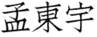

Dongyu Meng

|


About Me
I am a Ph.D. candidate at UC Santa Barbara. I work in SecLab with Giovanni Vigna and Christopher Kruegel. Before coming to UCSB, I got my master's degree from ShanghaiTech University with Hao Chen. I also hold a bachelor's degree from Department of Automation, Tsinghua University.
I'm passionate about cybersecurity in general. My past research work involves smart contract analysis, DeFi anomaly detection, symbolic execution, and adversarial ML. I organize and play CTFs with the Shellphish hacking team.
I go by Hector with non-Chinese speakers. The photo is from 2018 — imagine me with less hair now.
Publications
“Houston: Real-Time Anomaly Detection of Attacks against Ethereum DeFi Protocols”
Dongyu Meng*, Fabio Gritti*, Robert McLaughlin, Nicola Ruaro, Ilya Grishchenko, Christopher Kruegel, Giovanni Vigna
NDSS 2026 (To Appear)“Approve Once, Regret Forever: On the Exploitation of Ethereum’s Approve-TransferFrom Ecosystem”
Nicola Ruaro, Fabio Gritti, Dongyu Meng, Robert McLaughlin, Ilya Grishchenko, Christopher Kruegel, Giovanni Vigna
USENIX Security 2025“A History of Greed: Practical Symbolic Execution for Ethereum Smart Contracts”
Nicola Ruaro, Fabio Gritti, Robert McLaughlin, Dongyu Meng, Ilya Grishchenko, Christopher Kruegel, Giovanni Vigna
DIMVA 2025“Bullseye Polytope: Scalable Clean-Label Poisoning Attack with Improved Transferability”
Dongyu Meng, Michele Guerriero, Aravind Machiry, Hojjat Aghakhani, Priyanka Bose, Andrea Continella, Christopher Kruegel, Giovanni Vigna
EuroS&P 2021“Bran: Reduce Vulnerability Search Space in Large Open Source Repositories by Learning Bug Symptoms”
Dongyu Meng, Michele Guerriero, Aravind Machiry, Hojjat Aghakhani, Priyanka Bose, Andrea Continella, Christopher Kruegel, Giovanni Vigna
AsiaCCS 2021“MagNet: a Two-Pronged Defense Against Adversarial Examples.”
Dongyu Meng, and Hao Chen
[Slides] [Code]
CCS 2017“Evaluating Private Modes in Desktop and Mobile Browsers and Their Resistance to Fingerprinting.”
Yuanyi Wu, Dongyu Meng, and Hao Chen
CNS 2017